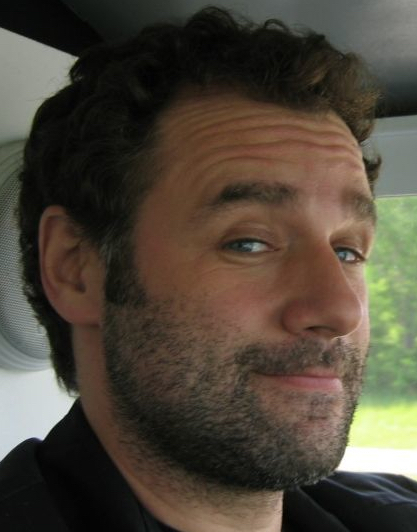

About Me
Tony Caio has won numerous awards for his work in broadcast television, design, and film. He is best known for his work in children's television. Tony has directed animated shorts, television commercials and developed original characters for various clients including Nickelodeon, Scholastic, Cartoon Network and PBS.
Tony recently directed an episode of Disney's P.King Duckling series for the Disney Junior channel. P.King Duckling is a preschool comedy series created by Emmy Award-Winning production Company Little Airplane.
Reach Me At